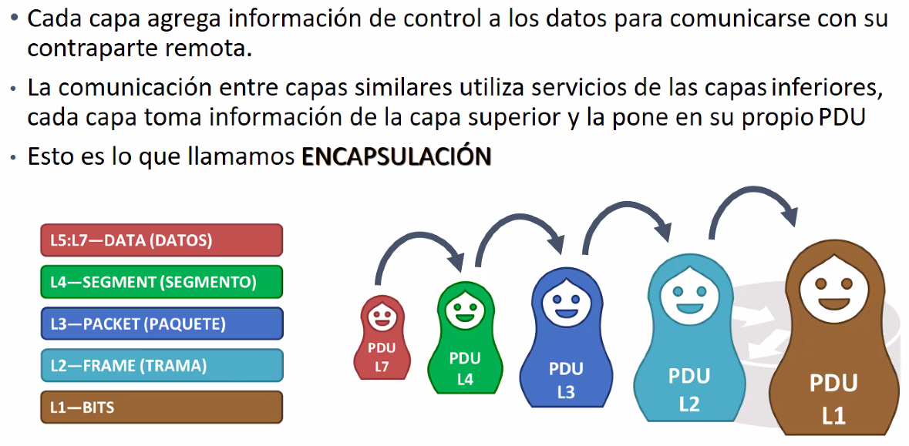

PDU: Es el protocolo de la unidad de informacion.
La unidad de informacion de cada capa (el lenguaje en el que se comunica cada capa).- Capa1:Bits
- Capa 2:Tramas
- Capa3: Paquetes
- Capa4:Segmente
- Otras: Datos
Las capas solo se pueden comunicar con capaz del mismo tipo.
Tengo informacion en data

Si vas bajando de capa (relativo al modelo OSI), se vas agregando ifformacion de las capas.
Notese que al final, la capa queda bit por bit.
Encabezado: En cada nival se agregan encabezados, que tienen informacion relevante de cada capa del modelo OSI.
Segmento: Puertos TCP/UDP
Network layer:
En capa header de cada capa se incluye informacion de origen y destino.
Bits: Idenitificar inicio y final del paquete.
El bit como tal no tiene sentido. Un conjunto de bits si tienen sentido.

Los headers tienen paquetes de bitd con patrones que cada capa reconoce.